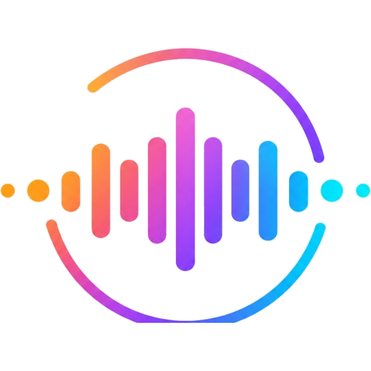

Prapthi.aiLog inSign up →Prapthi.ai is built on open speech research. Several of our voices were trained on datasets whose licences ask that their authors be credited, and we are glad to do so. This page lists those voices, the open models behind our product, and their licences.
1. Voices that require attribution
These voices were trained on the datasets linked below, published under Creative Commons Attribution licences (CC BY, and where marked CC BY-SA, which also asks that adaptations be shared alike). The adult voices are used unchanged. Their child and grandparent versions are made by Prapthi.ai by changing the pitch, tone and pace of the original voice; they come from the same datasets and carry the same credit.
| Voice | Language | Licence | Source |
|---|---|---|---|
| Antton | Basque | CC BY 4.0 | Training data source |
| Maider | Basque | CC BY 4.0 | Training data source |
| Clara | Catalan | CC BY-SA 3.0 ES | Training data source |
| Nuria | Catalan | CC BY-SA 3.0 ES | Training data source |
| Kasandra | Czech | CC BY 4.0 | Training data source |
| Tijn | Dutch | CC BY 4.0 | Training data source |
| Mart | Estonian | CC BY (META-SHARE, unrestricted use) | Training data source |
| Hugo | French | CC BY 4.0 | Training data source |
| Élodie | French | CC BY 4.0 | Training data source |
| Thorsten | German | CC BY 4.0 | Training data source |
| Serena | Italian | CC BY 4.0 | Training data source |
| Arman | Kazakh | CC BY 4.0 | Training data source |
| Askar | Kazakh | CC BY 4.0 | Training data source |
| Muna | Nepali | CC BY-SA 4.0 | Training data source |
| Artur | Slovenian | CC BY 4.0 | Training data source |
| Álvaro | Spanish | CC BY 3.0 | Training data source |
| Venkatesh | Telugu | CC BY 4.0 | Training data source |
| Mai | Vietnamese | CC BY 4.0 | Training data source |
| Cerys | Welsh | CC BY | Training data source |
2. Open models we use
| Model | Authors | Licence |
|---|---|---|
| Kokoro-82M | hexgrad | Apache-2.0 |
| Indic Parler-TTS | AI4Bharat | Apache-2.0 |
| IndicF5 | AI4Bharat | MIT |
| IndicTrans2 | AI4Bharat | MIT |
| svara-tts-v1 | Kenpath | Apache-2.0 |
| Chatterbox | Resemble AI | MIT |
| Piper voices | Rhasspy / Open Home Foundation and the dataset authors listed above | per voice |
| MMS-TTS | Meta AI | CC BY-NC 4.0 |
| Whisper | OpenAI | MIT |
| ACE-Step | ACE Studio and StepFun | Apache-2.0 |
| Qwen2.5 | Alibaba Qwen | Apache-2.0 |
| AudioLDM2 (Sound Effects) | CVSSP, University of Surrey | CC BY-NC-SA 4.0 |
| CMU Pronouncing Dictionary | Carnegie Mellon University | BSD-2-Clause |
3. Non-commercial voices and models
The voices below are built on models or datasets released for non-commercial use only: Meta's MMS-TTS models (CC BY-NC 4.0), and Piper voices trained on data under CC BY-NC, CC BY-NC-SA or the Blizzard 2013 Lessac licence. Please use them only for non-commercial work.
| Voice | Language | Model | Licence |
|---|---|---|---|
| Rituparna | Assamese | Meta MMS-TTS | CC BY-NC 4.0 |
| Sushila | Bagheli | Meta MMS-TTS | CC BY-NC 4.0 |
| Shubho | Bengali | Meta MMS-TTS | CC BY-NC 4.0 |
| Ishaan | English | Piper | CC BY-NC-SA 4.0 |
| Naina | English | Piper | CC BY-NC-SA 4.0 |
| Riya | English | Piper | Blizzard 2013 Lessac licence (non-commercial) |
| Dhan Singh | Garhwali | Meta MMS-TTS | CC BY-NC 4.0 |
| Maria | Greek | Piper | CC BY-NC 4.0 |
| Jignesh | Gujarati | Meta MMS-TTS | CC BY-NC 4.0 |
| Rajbir | Haryanvi | Meta MMS-TTS | CC BY-NC 4.0 |
| Nakul | Hindi | Meta MMS-TTS | CC BY-NC 4.0 |
| Priyamvada | Hindi | Piper | CC BY-NC-SA 4.0 |
| Sido | Ho | Meta MMS-TTS | CC BY-NC 4.0 |
| Rakesh | Kangri | Meta MMS-TTS | CC BY-NC 4.0 |
| Girish | Kannada | Meta MMS-TTS | CC BY-NC 4.0 |
| Phulmani | Kurukh | Meta MMS-TTS | CC BY-NC 4.0 |
| Anne | Luxembourgish | Piper | CC BY-NC-SA 4.0 |
| Rinki | Magahi | Meta MMS-TTS | CC BY-NC 4.0 |
| Rewa | Maithili | Meta MMS-TTS | CC BY-NC 4.0 |
| Madhavan | Malayalam | Meta MMS-TTS | CC BY-NC 4.0 |
| Ramesh | Malvi | Meta MMS-TTS | CC BY-NC 4.0 |
| Sonal | Marathi | Meta MMS-TTS | CC BY-NC 4.0 |
| Salomi | Mundari | Meta MMS-TTS | CC BY-NC 4.0 |
| Bhagaban | Odia | Meta MMS-TTS | CC BY-NC 4.0 |
| Ranbir | Punjabi | Meta MMS-TTS | CC BY-NC 4.0 |
| Sunita | Sadri | Meta MMS-TTS | CC BY-NC 4.0 |
| Nikola | Serbian | Piper | CC BY-NC-SA 4.0 |
| Thamarai | Tamil | Meta MMS-TTS | CC BY-NC 4.0 |
| Bhaskar | Telugu | Meta MMS-TTS | CC BY-NC 4.0 |
| Kerem | Turkish | Piper | CC BY-NC-SA 4.0 |
| Zeeshan | Urdu | Meta MMS-TTS | CC BY-NC 4.0 |
Our Sound Effects studio generates audio with AudioLDM2, released by its authors under CC BY-NC-SA 4.0 (non-commercial use, share alike).
4. Contact us
If you are an author of any of these works and would like the attribution changed, please write to info@prapthi.ai.